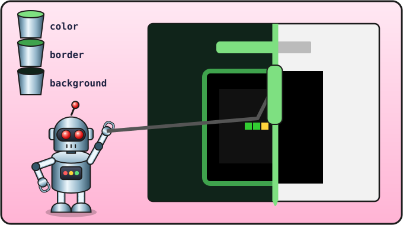

Урок 15 из 16 ⏱ 45 минут
Красота: оформление
Игра готова и работает. Теперь — самое приятное: нарядим её! Для внешнего вида страниц есть третий язык, CSS. Мы специально оставили его на конец: сначала программа должна работать, а украшать будем потом.
- узнаешь, что такое CSS и куда его писать;
- поменяешь цвет фона, шрифты, сделаешь рамку вокруг поля;
- научишься выбирать элементы по тегу, по
idи по классу; - нарисуешь круглое яблоко.
| 5 мин | Что такое CSS |
| 20 мин | Наряжаем страницу: фон, заголовок, рамка, счёт |
| 10 мин | Круглое яблоко на холсте |
| 10 мин | Придумываем свой стиль |

background, color, border. Код игры тот же, а выглядит она совсем иначе.Три языка одной страницы
- HTML — что есть на странице (заголовок, счёт, поле);
- JavaScript — как это работает (змейка ползёт, ест, растёт);
- CSS — как это выглядит (цвета, размеры, рамки, шрифты).
CSS пишут внутри тега <style>, в «голове» страницы, в <head>. Правило CSS выглядит так:
h1 {
color: green;
font-size: 48px;
}
h1— кого украшаем (все заголовки<h1>). Это называется селектор;- в фигурных скобках — что меняем: свойство, двоеточие, значение, точка с запятой.
Очень похоже на объекты в JavaScript, правда? Только запятые заменены точками с запятой.
Наряжаем страницу
Добавь в <head>, после <title>, блок со стилями:
<head>
<meta charset="utf-8">
<title>Змейка</title>
<style>
body {
background: #10241a;
color: white;
font-family: sans-serif;
text-align: center;
}
</style>
</head>
Сохрани и обнови: фон стал тёмно-зелёным, текст — белым, и всё стоит по центру. Разберём:
| Свойство | Что меняет |
|---|---|
background | цвет фона |
color | цвет текста |
font-family | шрифт: sans-serif — без засечек, serif — с засечками, monospace — как в редакторе кода |
text-align | выравнивание: left, center, right |
font-size | размер шрифта, например 48px |
border | рамка: толщина, вид, цвет — 6px solid green |
border-radius | скругление углов |
margin | отступ снаружи элемента |
font-weight | жирность: bold — жирный |
#10241a — это цвет, записанный кодом: после решётки идут три пары символов — сколько в цвете красного, зелёного и синего. Каждая пара — от 00 (совсем нет) до ff (максимум). Например, #ff0000 — красный, #ffff00 — жёлтый. Можно писать и названия: green, gold, tomato.
Заголовок и рамка
Добавь внутрь <style>, после правила для body, ещё два правила:
h1 {
color: #7ee081;
font-size: 48px;
margin: 10px;
}
canvas {
border: 6px solid #3fa34d;
border-radius: 10px;
}
Счёт: селектор по id
Чтобы украсить один конкретный элемент, его выбирают по имени-id со знаком # впереди. Сделаем числа счёта и рекорда жёлтыми и жирными:
#score, #best {
color: yellow;
font-weight: bold;
}
Запятая между селекторами значит «и этот, и этот».
Подсказка: селектор по классу
Добавь под холстом подсказку для игрока. Мы дадим ей класс — название для оформления. В отличие от id, один класс можно дать многим элементам.
<canvas id="game" width="400" height="400"></canvas> <p class="help">Стрелки - управление, пробел - новая игра</p>
Класс в CSS выбирают через точку:
.help {
color: #9fb8a5;
}
| Селектор | Кого выбирает | Пример |
|---|---|---|
canvas | все элементы с таким тегом | <canvas> |
#score | один элемент с id="score" | <span id="score"> |
.help | все элементы с class="help" | <p class="help"> |
Круглое яблоко
Холст CSS не украшает: на нём рисует JavaScript. Сделаем яблоко круглым. Добавь функцию после drawCell:
function drawApple() {
ctx.fillStyle = "red";
ctx.beginPath();
ctx.arc(apple.x * size + size / 2, apple.y * size + size / 2, size / 2 - 1, 0, Math.PI * 2);
ctx.fill();
}
beginPath()— «начинаю новую фигуру»;arc(x, y, радиус, начало, конец)— дуга с центром в точке (x, y). Центр клеточки — это её угол плюс половина размера. Радиус — половина клеточки. А0иMath.PI * 2значат «от начала до конца круга» — полный круг;fill()— закрасить фигуру.
В функции draw замени рисование яблока:
drawCell(apple.x, apple.y, "red"); drawApple();
- Выбери свои цвета для фона, заголовка и рамки. Можно сделать «космическую» змейку на тёмно-синем фоне или «пустынную» на песочном.
- Поменяй цвета змейки в
drawи цвет поля вclearField, чтобы они подходили к странице. - Добавь заголовку тень:
text-shadow: 3px 3px 0 black; - ⭐ Нарисуй змейке глаза: два маленьких чёрных квадратика внутри клеточки головы, после того как голова нарисована.
📄 Готовая игра: весь файл snake.html
<!DOCTYPE html>
<html>
<head>
<meta charset="utf-8">
<title>Змейка</title>
<style>
body {
background: #10241a;
color: white;
font-family: sans-serif;
text-align: center;
}
h1 {
color: #7ee081;
font-size: 48px;
margin: 10px;
}
canvas {
border: 6px solid #3fa34d;
border-radius: 10px;
}
#score, #best {
color: yellow;
font-weight: bold;
}
.help {
color: #9fb8a5;
}
</style>
</head>
<body>
<h1>Змейка</h1>
<p>Счёт: <span id="score">0</span> | Рекорд: <span id="best">0</span></p>
<canvas id="game" width="400" height="400"></canvas>
<p class="help">Стрелки - управление, пробел - новая игра</p>
<script>
let canvas = document.getElementById("game");
let ctx = canvas.getContext("2d");
let size = 20;
let cells = 20;
let snake;
let apple = { x: 0, y: 0 };
let dx;
let dy;
let nextDx;
let nextDy;
let score;
let gameOver;
let timer;
let speed;
let best = Number(localStorage.getItem("snakeBest"));
function clearField() {
ctx.fillStyle = "black";
ctx.fillRect(0, 0, 400, 400);
}
function drawCell(x, y, color) {
ctx.fillStyle = color;
ctx.fillRect(x * size, y * size, size - 1, size - 1);
}
function drawApple() {
ctx.fillStyle = "red";
ctx.beginPath();
ctx.arc(apple.x * size + size / 2, apple.y * size + size / 2, size / 2 - 1, 0, Math.PI * 2);
ctx.fill();
}
function randomCell() {
return Math.floor(Math.random() * cells);
}
function isOnSnake(x, y) {
for (let i = 0; i < snake.length; i++) {
if (snake[i].x === x && snake[i].y === y) {
return true;
}
}
return false;
}
function showScore() {
document.getElementById("score").textContent = score;
document.getElementById("best").textContent = best;
}
function placeApple() {
apple.x = randomCell();
apple.y = randomCell();
while (isOnSnake(apple.x, apple.y)) {
apple.x = randomCell();
apple.y = randomCell();
}
}
function draw() {
clearField();
drawApple();
for (let i = 0; i < snake.length; i++) {
drawCell(snake[i].x, snake[i].y, "lime");
}
drawCell(snake[0].x, snake[0].y, "yellow");
}
function endGame() {
gameOver = true;
clearInterval(timer);
if (score > best) {
best = score;
localStorage.setItem("snakeBest", best);
showScore();
}
ctx.fillStyle = "white";
ctx.font = "32px sans-serif";
ctx.textAlign = "center";
ctx.fillText("Игра окончена", 200, 200);
ctx.font = "18px sans-serif";
ctx.fillText("Нажми пробел, чтобы сыграть ещё", 200, 240);
}
function step() {
dx = nextDx;
dy = nextDy;
let head = { x: snake[0].x + dx, y: snake[0].y + dy };
if (head.x < 0 || head.x >= cells || head.y < 0 || head.y >= cells) {
endGame();
return;
}
if (isOnSnake(head.x, head.y)) {
endGame();
return;
}
snake.unshift(head);
if (head.x === apple.x && head.y === apple.y) {
score = score + 1;
showScore();
placeApple();
if (speed > 60) {
speed = speed - 10;
clearInterval(timer);
timer = setInterval(step, speed);
}
} else {
snake.pop();
}
draw();
}
function onKey(event) {
if (event.key === "ArrowUp" && dy !== 1) {
nextDx = 0;
nextDy = -1;
}
if (event.key === "ArrowDown" && dy !== -1) {
nextDx = 0;
nextDy = 1;
}
if (event.key === "ArrowLeft" && dx !== 1) {
nextDx = -1;
nextDy = 0;
}
if (event.key === "ArrowRight" && dx !== -1) {
nextDx = 1;
nextDy = 0;
}
if (event.key === " " && gameOver) {
startGame();
}
}
function startGame() {
snake = [
{ x: 10, y: 10 },
{ x: 9, y: 10 },
{ x: 8, y: 10 }
];
dx = 1;
dy = 0;
nextDx = 1;
nextDy = 0;
score = 0;
gameOver = false;
speed = 200;
showScore();
placeApple();
draw();
timer = setInterval(step, speed);
}
document.addEventListener("keydown", onKey);
startGame();
</script>
</body>
</html>